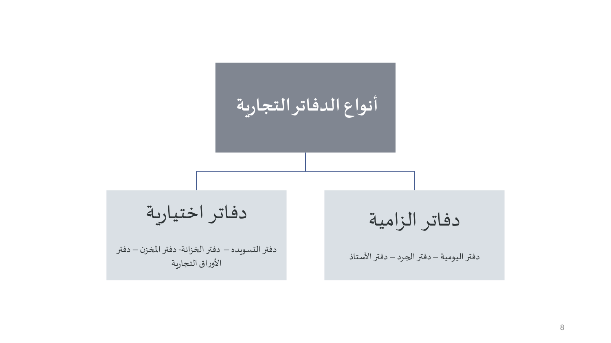

النقاط الأساسية من شرائح الدكتور (16 شريحة). الدكتور قال الاختبار يجي من المحاضرات، فهذي أهم من الكتاب.
المحاضرة السادسة تكمل القسم الأول (الأعمال التجارية والتاجر). تبدأ بالتزامات التاجر الأربعة، وبعدها تفصّل في أهمها هنا وهو مسك الدفاتر التجارية: ليش مهمة، مين ملزم فيها ومين مستثنى، أنواعها الإلزامية والاختيارية، كم سنة تنحفظ، وش يصير لو ما انمسكت أو ما كانت منتظمة، تدوينها بالحاسب الآلي، ودورها وحجيتها في الإثبات.

16 سؤال على هذي المحاضرة. حلّها في بنك الأسئلة — الجواب يطلع لك على طول، وتقدّمك ينحفظ.